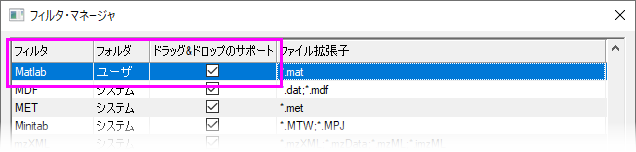

FAQ-1034 Origin画面内にデータをドラッグ＆ドロップしたときに、データコネクタを無効にするには？
Not-Use-Data-Connector-When-Drag-n-Drop
最終更新日：2020/8/12
データコネクタは、Originの新しいデータインポート機能であり、一般的な形式のファイルをドラッグアンドドロップで簡単にインポートできます。データコネクタと古いインポート機能（import
Xファンクション）の両方でインポート可能な形式のファイルをドラッグアンドドロップすると、デフォルトでコネクタを使ってインポートします。
ドラッグアンドドロップ時にデータコネクタを無効にする
- メニューの環境設定：システム変数を選択します。
- システム変数@DCCの値を-1に設定すると、全ファイルタイプにおいてデータコネクタを無効にします。
システム変数ページを参照して、@DDCを他の値にし、特定のファイルタイプについてデータコネクタの使用を無効にします。
加えて、以下のような例外について注意してください。
- データインポート設定が保存されているワークシートに、データファイルをドラッグアンドドロップする場合、常に以前のインポート機能が使用されます。
これは、Origin 2019などの古いバージョンで分析テンプレートを作成し、Origin 2020bなどの新しいバージョンで再利用する場合に当てはまる可能性があります。
- 適切なユーザ定義のOriginインポートフィルタ（*.oif）ファイルが
（a）データファイルと同じフォルダにある場合、
または
（b）User
Files\Filtersフォルダにある場合、
Originにファイルをドラッグアンドドロップすると、以前のインポート機能が使用されます。これは、以前Originインポートルーチンが問題なく動作し、それを使用することにした場合に当てはまります。
 |
- ドラッグアンドドロップ時にユーザ定義のインポートフィルタを使うには、フィルタ・マネージャ（環境設定：インポートフィルタ・マネージャー）で、ドラッグ＆ドロップのサポートにチェックを付ける必要があります。
- 
- 特定のファイル形式をドラッグアンドドロップしたときに選択できる、フィルタの選択ダイアログに、関連するシステムフィルタを表示するか制御するには、システム変数@IFSを変更します。
|
- DOFILE.OGSに以前からのインポートコードがあり、プログラム（SYSTEM）またはUser
Files（USER）フォルダにファイルがある場合、コードは問題なく実行されます。新しいインポートルーチンを作成する必要はありません。
| Note:
データコネクタ機能は現在開発中の機能ですが、以前のOriginのインポート機能はそうではないため、データコネクタの使用をお勧めします。たとえば、日時データを含むテキスト/CSVファイルをデータコネクタでインポートすると、ワークシート上で日時として自動的に処理およびフォーマットされます。
|
キーワード：インポート,
ASCII, CSV, TXT, DAT, Excel, コネクタ, ドラッグ＆ドロップ, データフィルタ